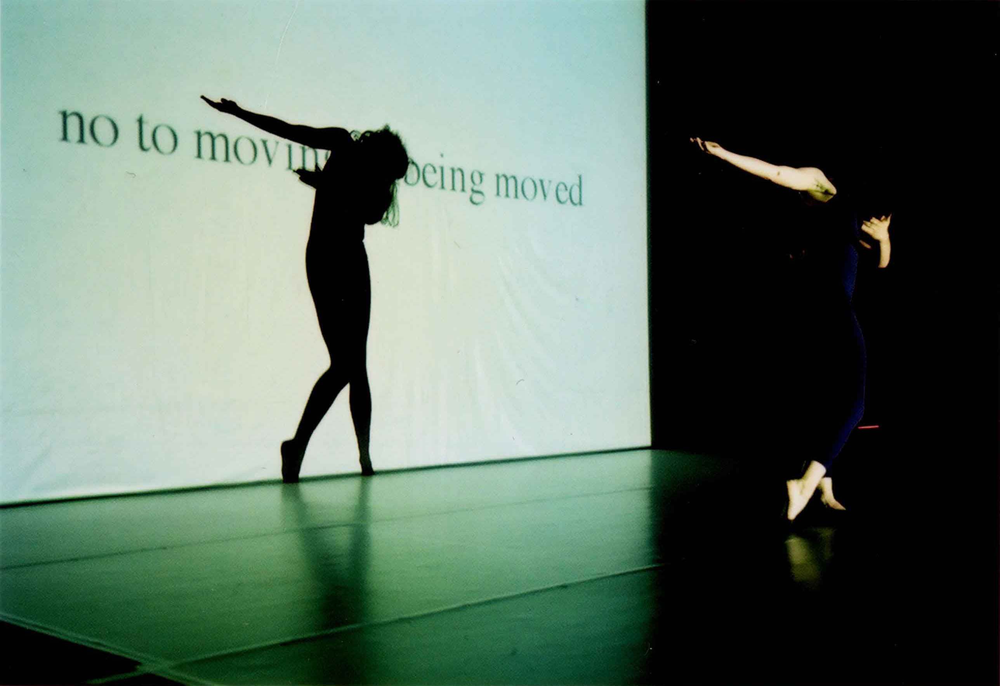

Quotation Marks Me 
photography: François Desautels Quotation marks me was my first solo work. Rather than a negotiation between people, choreographic writing places itself as a negotiation between traditions.
"For her first solo “Quotation marks me”, made in 2001 and which will be shown tomorrow in the i-camp, Chauchat confronted two important texts from dance history, Doris Humphreys ‘rule manual “The Art of Making Dances” from 1959 and the famous “no manifesto” by Yvonne Rainer, which the heroine of post-modern dance hurled in 1965 against the traditional understanding of dance. Chauchat tries to make it right for both and fiddles with a piece that brings out the effects desired by Humphreys and simultaneously negates them, as Rainer requires. It’s important for Alice Chauchat to deal with dance history. In her mid-twenties, she sees and understands her medium as counterpart to the visual arts, with all possibilities of analysis, self-reflexive relations and meta-theories. That, despite a strict conceptual approach, her works don’t appear brainy, but intelligent and sensual, is what distinguishes them." (Katja Schneider, Süddeutsche Zeitung, august 11th 2004) Credits Choreography, dance, production Alice Chauchat; Thanks to Künstlerhaus Mousonturm To watch a video, please contact me directly
|